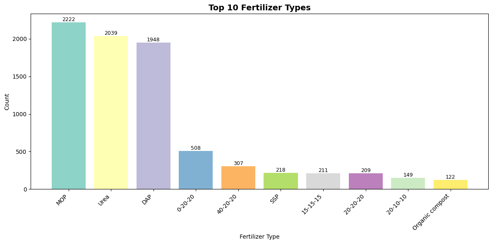
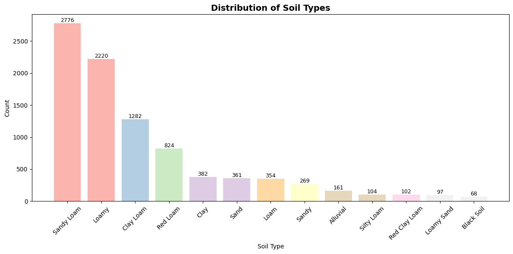
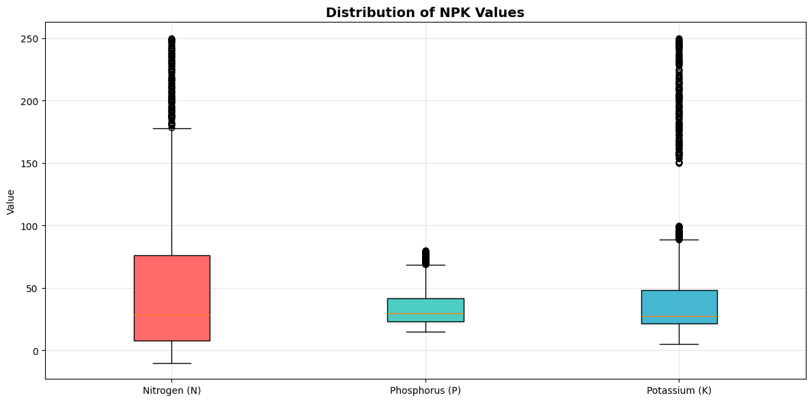
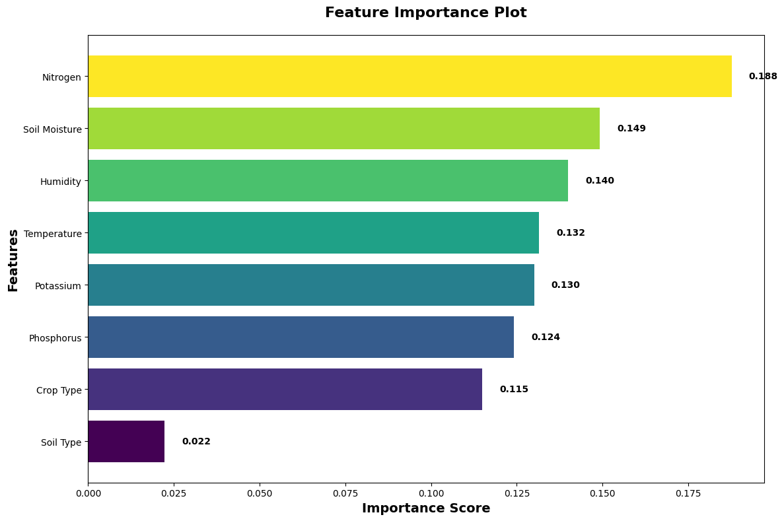
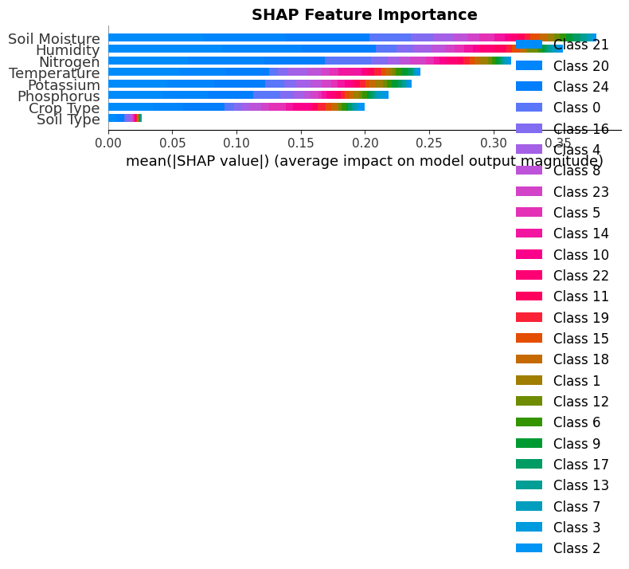
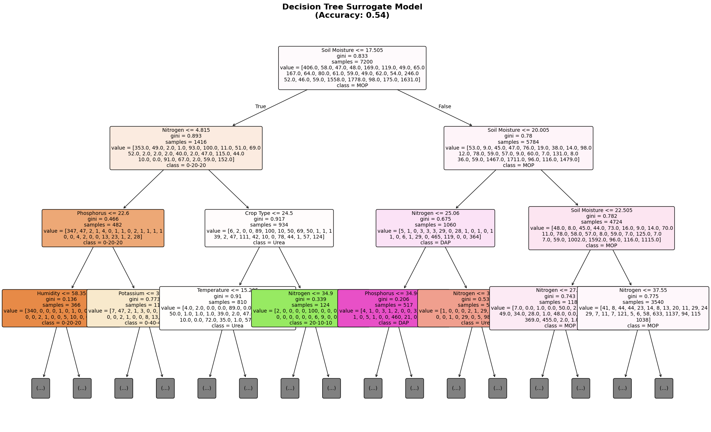
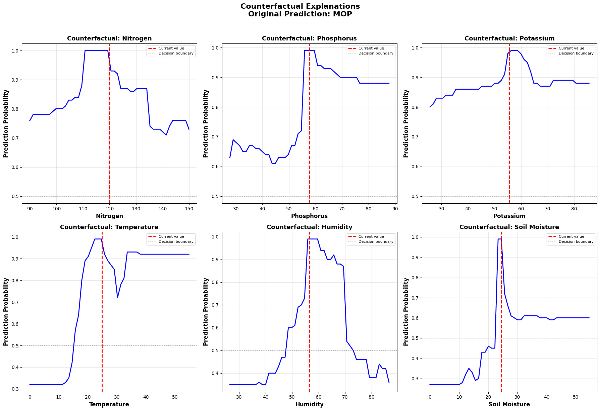

🌱 Fertilizer Recommendation Model - Complete Analysis Report
Generated on: 2026-03-14 00:06:08
📊 Dataset Overview
- Dataset Shape: 9000 rows, 9 columns
- Feature Names: Temperature, Humidity, Soil Moisture, Soil Type, Crop Type, Nitrogen, Potassium, Phosphorus
- Number of Fertilizer Classes: 25
- Model Accuracy: 84.22%
📈 Top 3 Most Common Fertilizers:
- 1. MOP: 2222 occurrences (24.7%)
- 2. Urea: 2039 occurrences (22.7%)
- 3. DAP: 1948 occurrences (21.6%)
🧪 Average Nutrient Values:
- Nitrogen: 47.4
- Phosphorus: 33.8
- Potassium: 38.3
🌡️ Environmental Ranges:
- Temperature: 10.0°C to 40.0°C
- Humidity: 30.0% to 90.0%
- Soil Moisture: 10.0% to 50.0%
📊 Data Exploration Plots

Fertilizer Distribution

Soil Distribution

Npk Distribution
🎯 Model Interpretation - Global

Feature Importance

Shap Summary

Decision Tree
🔍 Local Interpretations

Counterfactual
📋 All Fertilizer Classes (25)
0-20-20
0-40-40
100-50-50
120-60-60
15-15-15
20-10-10
20-10-20
20-15-15
20-20-20
20-30-20
20-40-20
25-10-15
30-10-20
30-15-15
30-15-20
30-20-20
40-20-20
40-30-40
60-40-60
Compound NPK (0-20-20)
DAP
MOP
Organic compost
SSP
Urea